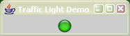
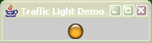
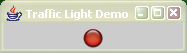

The TrafficLight (org.bhavaya.ui.TrafficLight) is an image component with three possible states, displaying a different image for each state. The states are RED, YELLOW and GREEN, although the images needn't necessarily reflect the state's names. Three snap-shots, one of each of the TrafficLight's states, are shown below.
|  |  |  |
The essential lines of code required are:
System.setProperty("OVERRIDE_RESOURCE_DIR","C:/location/of/images");
TrafficLightModel model = new DefaultTrafficLightModel();
TrafficLight trafficLight = new TrafficLight(model);
model.setState(TrafficLightState.YELLOW);
which are incorporated into TrafficLightDemo.java. The demo can be run directly via JavaWebStart, or if you have downloaded and extracted examples.zip it can be run with: ant trafficlightdemo. The default images are led_red.png, led_green.png and led_amber.png, if you downloaded and extracted the Bhavaya source code the images will be located in /extract_location/bhavaya/resources. Alternatively you may use any images required although unfortunately their names are fixed. The system property OVERRIDE_RESOURCE_DIR should be changed to reflect the location of your images. If you're compiling against bhavaya.jar the default images will be picked up automatically providing the resource dir is not overridden.
The name of the TrafficLight and the pop-up text that appears when the mouse is placed over the component can also be set.
model.setName("Health");
model.setDescription("Traffic light displaying the instrument's health");
(before the code that constructs the TrafficLight object) and results in:
(When using this component remember to add Bhavaya's jar files to your classpath (extract_location/bhavaya/bin/bhavaya.jar and extract_location/bhavaya/lib/log4j-1.2.15-patched.jar).)